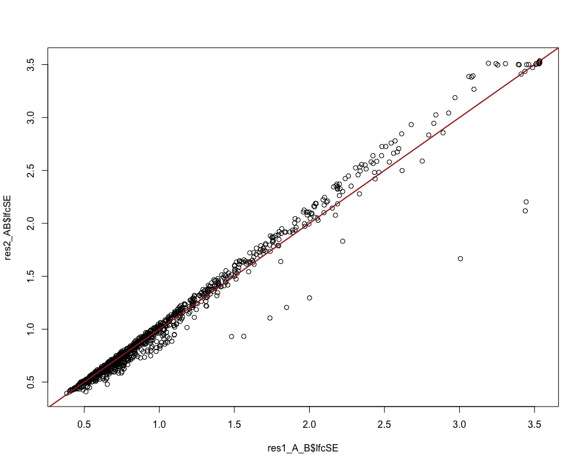

DESeq samples comparison: contrast designs
Approximate time: 40 minutes
Learning Objectives
- Demonstrate the use of the design formula with simple and complex designs
- Construct R code to execute the differential expression analysis workflow with DESeq2
Differential expression analysis with DESeq2
The final step in the differential expression analysis workflow is fitting the raw counts to the NB model and performing the statistical test for differentially expressed genes. In this step we essentially want to determine whether the mean expression levels of different sample groups are significantly different.

Image credit: Paul Pavlidis, UBC
The DESeq2 paper was published in 2014, but the package is continually updated and available for use in R through Bioconductor. It builds on good ideas for dispersion estimation and use of Generalized Linear Models from the DSS and edgeR methods.
Differential expression analysis with DESeq2 involves multiple steps as displayed in the flowchart below in blue. Briefly, DESeq2 will model the raw counts, using normalization factors (size factors) to account for differences in library depth. Then, it will estimate the gene-wise dispersions and shrink these estimates to generate more accurate estimates of dispersion to model the counts. Finally, DESeq2 will fit the negative binomial model and perform hypothesis testing using the Wald test or Likelihood Ratio Test.

NOTE: DESeq2 is actively maintained by the developers and continuously being updated. As such, it is important that you note the version you are working with. Recently, there have been some rather big changes implemented that impact the output. To find out more detail about the specific modifications made to methods described in the original 2014 paper, take a look at this section in the DESeq2 vignette.
Additional details on the statistical concepts underlying DESeq2 are elucidated nicely in Rafael Irizarry's materials for the EdX course, "Data Analysis for the Life Sciences Series".
Running DESeq2
Prior to performing the differential expression analysis, it is a good idea to know what sources of variation are present in your data, either by exploration during the QC and/or prior knowledge. Once you know the major sources of variation, you can remove them prior to analysis or control for them in the statistical model by including them in your design formula.
Design formula
A design formula tells the statistical software the known sources of variation to control for, as well as, the factor of interest to test for during differential expression testing. For example, if you know that sex is a significant source of variation in your data, then sex should be included in your model. The design formula should have all of the factors in your metadata that account for major sources of variation in your data. The last factor entered in the formula should be the condition of interest.
For example, suppose you have the following metadata:

If you want to examine the expression differences between treatments, and you know that major sources of variation include bloodtype and patient, then your design formula would be:
design = ~ bloodtype + patient + treatment
The tilde (~) should always precede your factors and tells DESeq2 to model the counts using the following formula. Note the factors included in the design formula need to match the column names in the metadata.
In this tutorial we show a general and flexible way to define contrasts, and is often useful for more complex contrasts or when the design of the experiment is imbalanced (e.g. different number of replicates in each group). Although we focus on DESeq2, the approach can also be used with the other popular package edgeR.
Each section below covers a particular experimental design, from simpler to more complex ones. The first chunk of code in each section is to simulate data, which has no particular meaning and is only done in order to have a DESeqDataSet object with the right kind of variables for each example. In practice, users can ignore this step as they should have created a DESeqDataSet object from their own data following the instructions in the vignette.
One factor, two levels (slide 5)
# simulate data
dds <- makeExampleDESeqDataSet(n = 1000, m = 6, betaSD = 2)
dds$condition <- factor(rep(c("control", "treat"), each = 3))
First we can look at our sample information:
colData(dds)
## DataFrame with 6 rows and 1 column
## condition
## <factor>
## sample1 control
## sample2 control
## sample3 control
## sample4 treat
## sample5 treat
## sample6 treat
Our factor of interest is condition and so we define our design and run the DESeq model fitting routine:
design(dds) <- ~ 1 + condition # or just `~ condition`
dds <- DESeq(dds) # equivalent to edgeR::glmFit()
Then check what coefficients DESeq estimated:
resultsNames(dds)
## [1] "Intercept" "condition_treat_vs_control"
We can see that we have a coefficient for our intercept and coefficient for the effect of “treat” (i.e. differences between treat versus control).
Using the more standard syntax, we can obtain the results for the effect of treat as such:
res1 <- results(dds, contrast = list("condition_treat_vs_control"))
res1
## log2 fold change (MLE): condition_treat_vs_control effect
## Wald test p-value: condition_treat_vs_control effect
## DataFrame with 1000 rows and 6 columns
## baseMean log2FoldChange lfcSE stat pvalue
## <numeric> <numeric> <numeric> <numeric> <numeric>
## gene1 40.90941 1.267525859 0.574144 2.207679752 0.0272666
## gene2 12.21876 -0.269917301 1.111127 -0.242922069 0.8080658
## gene3 1.91439 -3.538133611 2.564464 -1.379677442 0.1676860
## gene4 10.24472 0.954811627 1.166408 0.818591708 0.4130194
## gene5 13.16824 0.000656519 0.868780 0.000755679 0.9993971
## ... ... ... ... ... ...
## gene996 40.43827 -1.0291276 0.554587 -1.855664 0.063501471
## gene997 52.88360 0.0622133 0.561981 0.110704 0.911851377
## gene998 73.06582 1.3271896 0.576695 2.301373 0.021370581
## gene999 8.87701 -5.8385374 1.549471 -3.768084 0.000164506
## gene1000 37.06533 1.2669314 0.602010 2.104501 0.035334764
## padj
## <numeric>
## gene1 0.0712378
## gene2 0.8779871
## gene3 0.2943125
## gene4 0.5692485
## gene5 0.9996728
## ... ...
## gene996 0.138827354
## gene997 0.948279388
## gene998 0.059599481
## gene999 0.000914882
## gene1000 0.087737235
The above is a simple way to obtain the results of interest. But it is worth understanding how DESeq is getting to these results by looking at the model’s matrix. DESeq defines the model matrix using base R functionality:
model.matrix(design(dds), colData(dds))
## (Intercept) conditiontreat
## sample1 1 0
## sample2 1 0
## sample3 1 0
## sample4 1 1
## sample5 1 1
## sample6 1 1
## attr(,"assign")
## [1] 0 1
## attr(,"contrasts")
## attr(,"contrasts")$condition
## [1] "contr.treatment"
We can see that R coded “condition” as a dummy variable, with an intercept (common to all samples) and a “conditiontreat” variable, which adds the effect of treat to samples 4-6.
We can actually set our contrasts in DESeq2::results() using a numeric vector. The way it works is to define a vector of “weights” for the coefficient(s) we want to test for. In this case, we have (Intercept) and conditiontreat as our coefficients (see model matrix above), and we want to test for the effect of treat, so our contrast vector would be c(0, 1). In other words, we don’t care about the value of (Intercept) (so it has a weight of 0), and we’re only interested in the effect of treat (so we give it a weight of 1).
In this case the design is very simple, so we could define our contrast vector “manually”. But for complex designs this can get more difficult to do, so it’s worth mentioning the general way in which we can define this. For any contrast of interest, we can follow three steps:
- Get the model matrix
- Subset the matrix for each group of interest and calculate its column means - this results in a vector of coefficients for each group
- Subtract the group vectors from each other according to the comparison we’re interested in
Let’s see this example in action:
# get the model matrix
mod_mat <- model.matrix(design(dds), colData(dds))
mod_mat
## (Intercept) conditiontreat
## sample1 1 0
## sample2 1 0
## sample3 1 0
## sample4 1 1
## sample5 1 1
## sample6 1 1
## attr(,"assign")
## [1] 0 1
## attr(,"contrasts")
## attr(,"contrasts")$condition
## [1] "contr.treatment"
# calculate the vector of coefficient weights in the treat
treat <- colMeans(mod_mat[dds$condition == "treat", ])
treat
## (Intercept) conditiontreat
## 1 1
# calculate the vector of coefficient weights in the control
control <- colMeans(mod_mat[dds$condition == "control", ])
control
## (Intercept) conditiontreat
## 1 0
# The contrast we are interested in is the difference between treat and control
treat - control
## (Intercept) conditiontreat
## 0 1
That last step is where we define our contrast vector, and we can give this directly to the results function:
# get the results for this contrast
res2 <- results(dds, contrast = treat - control)
This gives us exactly the same results as before, which we can check for example by plotting the log-fold-changes between the first and second approach:
plot(res1$log2FoldChange, res2$log2FoldChange)

Recoding the design (slide 6)
Often, we can use different model matrices that essentially correspond to the same design. For example, we could recode our design above by removing the intercept:
design(dds) <- ~ 0 + condition
dds <- DESeq(dds)
resultsNames(dds)
## [1] "conditioncontrol" "conditiontreat"
In this case we get a coefficient corresponding to the average expression in control and the average expression in the treat (rather than the difference between treat and control).
If we use the same contrast trick as before (using the model matrix), we can see the result is the same:
# get the model matrix
mod_mat <- model.matrix(design(dds), colData(dds))
mod_mat
## conditioncontrol conditiontreat
## sample1 1 0
## sample2 1 0
## sample3 1 0
## sample4 0 1
## sample5 0 1
## sample6 0 1
## attr(,"assign")
## [1] 1 1
## attr(,"contrasts")
## attr(,"contrasts")$condition
## [1] "contr.treatment"
# calculate weights for coefficients in each condition
treat <- colMeans(mod_mat[which(dds$condition == "treat"), ])
control <- colMeans(mod_mat[which(dds$condition == "control"), ])
# get the results for our contrast
res3 <- results(dds, contrast = treat - control)
Again, the results are essentially the same:
plot(res1$log2FoldChange, res3$log2FoldChange)

In theory there’s no difference between these two ways of defining our design. The design with an intercept is more common, but for the purposes of understanding what’s going on, it’s sometimes easier to look at models without intercept.
One factor, three levels (slide 7)
# simulate data
dds <- makeExampleDESeqDataSet(n = 1000, m = 9, betaSD = 2)
dds$condition <- NULL
dds$bloodtype <- factor(rep(c("bloodA", "bloodB", "bloodO"), each = 3))
dds$bloodtype <- relevel(dds$bloodtype, "bloodO")
First we can look at our sample information:
colData(dds)
## DataFrame with 9 rows and 1 column
## bloodtype
## <factor>
## sample1 bloodA
## sample2 bloodA
## sample3 bloodA
## sample4 bloodB
## sample5 bloodB
## sample6 bloodB
## sample7 bloodO
## sample8 bloodO
## sample9 bloodO
As in the previous example, we only have one factor of interest, condition, and so we define our design and run the DESeq as before:
design(dds) <- ~ 1 + bloodtype
dds <- DESeq(dds)
# check the coefficients estimated by DEseq
resultsNames(dds)
## [1] "Intercept" "bloodtype_bloodA_vs_bloodO"
## [3] "bloodtype_bloodB_vs_bloodO"
We see that now we have 3 coefficients:
- “Intercept” corresponds to bloodO bloodtype (our reference level)
- “bloodtype_bloodA_vs_bloodO” corresponds to the difference between the reference level and bloodA
- “bloodtype_bloodB_vs_bloodO” corresponds to the difference between the reference level and bloodB
We could obtain the difference between bloodO and any of the two bloodtypes easily:
res1_bloodA_bloodO <- results(dds, contrast = list("bloodtype_bloodA_vs_bloodO"))
res1_bloodB_bloodO <- results(dds, contrast = list("bloodtype_bloodB_vs_bloodO"))
For comparing bloodA vs bloodB, however, we need to compare two coefficients with each other to check whether they are themselves different (check the slide to see the illustration). This is how the standard DESeq syntax would be:
res1_bloodA_bloodB <- results(dds, contrast = list("bloodtype_bloodA_vs_bloodO",
"bloodtype_bloodB_vs_bloodO"))
However, following our three steps detailed in the first section, we can define our comparisons from the design matrix:
# define the model matrix
mod_mat <- model.matrix(design(dds), colData(dds))
mod_mat
## (Intercept) bloodtypebloodA bloodtypebloodB
## sample1 1 1 0
## sample2 1 1 0
## sample3 1 1 0
## sample4 1 0 1
## sample5 1 0 1
## sample6 1 0 1
## sample7 1 0 0
## sample8 1 0 0
## sample9 1 0 0
## attr(,"assign")
## [1] 0 1 1
## attr(,"contrasts")
## attr(,"contrasts")$bloodtype
## [1] "contr.treatment"
# calculate coefficient vectors for each group
bloodA <- colMeans(mod_mat[dds$bloodtype == "bloodA", ])
bloodB <- colMeans(mod_mat[dds$bloodtype == "bloodB", ])
bloodO <- colMeans(mod_mat[dds$bloodtype == "bloodO", ])
And we can now define any contrasts we want:
# obtain results for each pairwise contrast
res2_bloodA_bloodO <- results(dds, contrast = bloodA - bloodO)
res2_bloodB_bloodO <- results(dds, contrast = bloodB - bloodO)
res2_bloodA_bloodB <- results(dds, contrast = bloodA - bloodB)
# plot the results from the two approaches to check that they are identical
plot(res1_bloodA_bloodO$log2FoldChange, res2_bloodA_bloodO$log2FoldChange)
plot(res1_bloodB_bloodO$log2FoldChange, res2_bloodB_bloodO$log2FoldChange)
plot(res1_bloodA_bloodB$log2FoldChange, res2_bloodA_bloodB$log2FoldChange)
A and B against O (slide 7)
With this approach, we could even define a more unusual contrast, for example to find genes that differ between A and B against and O samples:
# define vector of coefficients for A_B samples
A_B <- colMeans(mod_mat[dds$bloodtype %in% c("bloodA", "bloodB"),])
# Our contrast of interest is
A_B - bloodO
## (Intercept) bloodtypebloodA bloodtypebloodB
## 0.0 0.5 0.5
Notice the contrast vector in this case assigns a “weight” of 0.5 to each of bloodtypebloodA and bloodtypebloodB. This is equivalent to saying that we want to consider the average of bloodA and bloodB expression. In fact, we could have also defined our contrast vector like this:
# average of bloodA and bloodB minus bloodO
(bloodA + bloodB)/2 - bloodO
## (Intercept) bloodtypebloodA bloodtypebloodB
## 0.0 0.5 0.5
To obtain our results, we use the results() function as before:
# get the results between A_B and bloodA
res2_AB <- results(dds, contrast = A_B - bloodO)
Extra: why not define a new group in our design matrix? (slide 8)
For this last example (A_B vs bloodO), we may have considered creating a new variable in our column data:
dds$A_B <- factor(dds$bloodtype %in% c("bloodA", "bloodB"))
colData(dds)
## DataFrame with 9 rows and 3 columns
## bloodtype sizeFactor A_B
## <factor> <numeric> <factor>
## sample1 bloodA 0.972928 TRUE
## sample2 bloodA 0.985088 TRUE
## sample3 bloodA 0.960749 TRUE
## sample4 bloodB 0.916582 TRUE
## sample5 bloodB 0.936918 TRUE
## sample6 bloodB 1.137368 TRUE
## sample7 bloodO 1.071972 FALSE
## sample8 bloodO 1.141490 FALSE
## sample9 bloodO 1.140135 FALSE
and then re-run DESeq with a new design:
design(dds) <- ~ 1 + A_B
dds <- DESeq(dds)
resultsNames(dds)
## [1] "Intercept" "A_B_TRUE_vs_FALSE"
res1_A_B <- results(dds, contrast = list("A_B_TRUE_vs_FALSE"))
However, in this model the gene dispersion is estimated together for bloodA and bloodB samples as if they were replicates of each other, which may result in inflated/deflated estimates. Instead, our approach above estimates the error within each of those groups.
To check the difference one could compare the two approaches visually:
# compare the log-fold-changes between the two approaches
plot(res1_A_B$log2FoldChange, res2_AB$log2FoldChange)
abline(0, 1, col = "brown", lwd = 2)

# compare the errors between the two approaches
plot(res1_A_B$lfcSE, res2_AB$lfcSE)
abline(0, 1, col = "brown", lwd = 2)

Two factors with interaction (slide 9)
# simulate data
dds <- makeExampleDESeqDataSet(n = 1000, m = 12, betaSD = 2)
dds$bloodtype <- factor(rep(c("bloodO", "bloodA"), each = 6))
dds$bloodtype <- relevel(dds$bloodtype, "bloodO")
dds$condition <- factor(rep(c("treat", "control"), 6))
dds <- dds[, order(dds$bloodtype, dds$condition)]
colnames(dds) <- paste0("sample", 1:ncol(dds))
First let’s look at our sample information:
colData(dds)
## DataFrame with 12 rows and 2 columns
## condition bloodtype
## <factor> <factor>
## sample1 control bloodO
## sample2 control bloodO
## sample3 control bloodO
## sample4 treat bloodO
## sample5 treat bloodO
## ... ... ...
## sample8 control bloodA
## sample9 control bloodA
## sample10 treat bloodA
## sample11 treat bloodA
## sample12 treat bloodA
This time we have two factors of interest, and we want to model both with an interaction (i.e. we assume that bloodA and bloodO samples may respond differently to treat/control). We define our design accordingly and fit the model:
design(dds) <- ~ 1 + bloodtype + condition + bloodtype:condition
dds <- DESeq(dds)
resultsNames(dds)
## [1] "Intercept" "bloodtype_bloodA_vs_bloodO"
## [3] "condition_treat_vs_control" "bloodtypebloodA.conditiontreat"
Because we have two factors and an interaction, the number of comparisons we can do is larger. Using our three-step approach from the model matrix, we do things exactly as we’ve been doing so far:
# get the model matrix
mod_mat <- model.matrix(design(dds), colData(dds))
# Define coefficient vectors for each condition
bloodO_control <- colMeans(mod_mat[dds$bloodtype == "bloodO" & dds$condition == "control", ])
bloodO_treat <- colMeans(mod_mat[dds$bloodtype == "bloodO" & dds$condition == "treat", ])
bloodA_control <- colMeans(mod_mat[dds$bloodtype == "bloodA" & dds$condition == "control", ])
bloodA_treat <- colMeans(mod_mat[dds$bloodtype == "bloodA" & dds$condition == "treat", ])
We are now ready to define any contrast of interest from these vectors (for completeness we show the equivalent syntax using the coefficient’s names from DESeq).
bloodA vs bloodO (in the control):
res1 <- results(dds, contrast = bloodA_control - bloodO_control)
# or equivalently
res2 <- results(dds, contrast = list("bloodtype_bloodA_vs_bloodO"))
bloodA vs bloodO (in the treatment):
res1 <- results(dds, contrast = bloodO_treat - bloodA_treat)
# or equivalently
res2 <- results(dds, contrast = list(c("bloodtype_bloodA_vs_bloodO",
"bloodtypebloodA.conditiontreat")))
treat vs control (for bloodtypes O):
res1 <- results(dds, contrast = bloodO_treat - bloodO_control)
# or equivalently
res2 <- results(dds, contrast = list(c("condition_treat_vs_control")))
treat vs control (for bloodtypes A):
res1 <- results(dds, contrast = bloodA_treat - bloodA_control)
# or equivalently
res2 <- results(dds, contrast = list(c("condition_treat_vs_control",
"bloodtypebloodA.conditiontreat")))
Interaction between bloodtype and condition
I.e. do bloodAs and bloodOs respond differently to the treatment?
res1 <- results(dds,
contrast = (bloodA_treat - bloodA_control) - (bloodO_treat - bloodO_control))
# or equivalently
res2 <- results(dds, contrast = list("bloodtypebloodA.conditiontreat"))
In conclusion, although we can define these contrasts using DESeq coefficient names, it is somewhat more explicit (and perhaps intuitive?) what it is we’re comparing using matrix-based contrasts.
Three factors, with nesting (slide 10)
# simulate data
dds <- makeExampleDESeqDataSet(n = 1000, m = 24, betaSD = 2)
dds$bloodtype <- factor(rep(c("bloodA", "bloodO"), each = 12))
dds$bloodtype <- relevel(dds$bloodtype, "bloodO")
dds$patient <- factor(rep(LETTERS[1:4], each = 6))
dds$condition <- factor(rep(c("treat", "control"), 12))
dds <- dds[, order(dds$bloodtype, dds$patient, dds$condition)]
colnames(dds) <- paste0("sample", 1:ncol(dds))
First let’s look at our sample information:
colData(dds)
## DataFrame with 24 rows and 3 columns
## condition bloodtype patient
## <factor> <factor> <factor>
## sample1 control bloodO C
## sample2 control bloodO C
## sample3 control bloodO C
## sample4 treat bloodO C
## sample5 treat bloodO C
## ... ... ... ...
## sample20 control bloodA B
## sample21 control bloodA B
## sample22 treat bloodA B
## sample23 treat bloodA B
## sample24 treat bloodA B
Now we have three factors, but patient is nested within bloodtype (i.e. a patient is either bloodA or bloodO, it cannot be both). Therefore, bloodtype is a linear combination with patient (or, another way to think about it is that bloodtype is redundant with patient). Because of this, we will define our design without including “bloodtype”, although later we can compare groups of patient of the same bloodtype with each other.
design(dds) <- ~ 1 + patient + condition + patient:condition
dds <- DESeq(dds)
resultsNames(dds)
## [1] "Intercept" "patient_B_vs_A"
## [3] "patient_C_vs_A" "patient_D_vs_A"
## [5] "condition_treat_vs_control" "patientB.conditiontreat"
## [7] "patientC.conditiontreat" "patientD.conditiontreat"
Now it’s harder to define contrasts between groups of patient of the same bloodtype using DESeq’s coefficient names (although still possible). But using the model matrix approach, we do it in exactly the same way we have done so far!
Again, let’s define our groups from the model matrix:
# get the model matrix
mod_mat <- model.matrix(design(dds), colData(dds))
# define coefficient vectors for each group
bloodO_control <- colMeans(mod_mat[dds$bloodtype == "bloodO" & dds$condition == "control", ])
bloodA_control <- colMeans(mod_mat[dds$bloodtype == "bloodA" & dds$condition == "control", ])
bloodO_treat <- colMeans(mod_mat[dds$bloodtype == "bloodO" & dds$condition == "treat", ])
bloodA_treat <- colMeans(mod_mat[dds$bloodtype == "bloodA" & dds$condition == "treat", ])
It’s worth looking at some of these vectors, to see that they are composed of weighted coefficients from different patient. For example, for “bloodO” patient, we have equal contribution from “patientC” and “patientD”:
bloodO_control
## (Intercept) patientB patientC
## 1.0 0.0 0.5
## patientD conditiontreat patientB:conditiontreat
## 0.5 0.0 0.0
## patientC:conditiontreat patientD:conditiontreat
## 0.0 0.0
And so, when we define our contrasts, each patient will be correctly weighted:
bloodO_treat - bloodO_control
## (Intercept) patientB patientC
## 0.0 0.0 0.0
## patientD conditiontreat patientB:conditiontreat
## 0.0 1.0 0.0
## patientC:conditiontreat patientD:conditiontreat
## 0.5 0.5
We can set our contrasts in exactly the same way as we did in the previous section (for completeness, we also give the contrasts using DESeq’s named coefficients).
bloodA vs bloodO (in the control):
res1_bloodA_bloodO_control <- results(dds, contrast = bloodA_control - bloodO_control)
# or equivalently
res2_bloodA_bloodO_control <- results(dds,
contrast = list(c("patient_B_vs_A"), # Blood type A
c("patient_C_vs_A", # Blood type O
"patient_D_vs_A"))) # Blood type O
bloodA vs bloodO (in the treat):
res1_bloodO_bloodA_treat <- results(dds, contrast = bloodO_treat - bloodA_treat)
# or equivalently
res2_bloodO_bloodA_treat <- results(dds,
contrast = list(c("patient_B_vs_A", # Blood type A
"patientB.conditiontreat"), # Interaction of patient B with treatment
c("patient_C_vs_A", # Blood type O
"patient_D_vs_A", # Blood type O
"patientC.conditiontreat", # Interaction of patient C with treatment
"patientD.conditiontreat"))) # Interaction of patient B with treatment
And so on, for other contrasts of interest…
Extra: imbalanced design
Let’s take our previous example, but drop one of the samples from the data, so that we only have 2 replicates for it.
dds <- dds[, -1] # drop one of the patient C samples
dds <- DESeq(dds)
resultsNames(dds)
## [1] "Intercept" "patient_B_vs_A"
## [3] "patient_C_vs_A" "patient_D_vs_A"
## [5] "condition_treat_vs_control" "patientB.conditiontreat"
## [7] "patientC.conditiontreat" "patientD.conditiontreat"
Define our model matrix and coefficient vectors:
mod_mat <- model.matrix(design(dds), colData(dds))
mod_mat
## (Intercept) patientB patientC patientD conditiontreat
## sample2 1 0 1 0 0
## sample3 1 0 1 0 0
## sample4 1 0 1 0 1
## sample5 1 0 1 0 1
## sample6 1 0 1 0 1
## sample7 1 0 0 1 0
## sample8 1 0 0 1 0
## sample9 1 0 0 1 0
## sample10 1 0 0 1 1
## sample11 1 0 0 1 1
## sample12 1 0 0 1 1
## sample13 1 0 0 0 0
## sample14 1 0 0 0 0
## sample15 1 0 0 0 0
## sample16 1 0 0 0 1
## sample17 1 0 0 0 1
## sample18 1 0 0 0 1
## sample19 1 1 0 0 0
## sample20 1 1 0 0 0
## sample21 1 1 0 0 0
## sample22 1 1 0 0 1
## sample23 1 1 0 0 1
## sample24 1 1 0 0 1
## patientB:conditiontreat patientC:conditiontreat
## sample2 0 0
## sample3 0 0
## sample4 0 1
## sample5 0 1
## sample6 0 1
## sample7 0 0
## sample8 0 0
## sample9 0 0
## sample10 0 0
## sample11 0 0
## sample12 0 0
## sample13 0 0
## sample14 0 0
## sample15 0 0
## sample16 0 0
## sample17 0 0
## sample18 0 0
## sample19 0 0
## sample20 0 0
## sample21 0 0
## sample22 1 0
## sample23 1 0
## sample24 1 0
## patientD:conditiontreat
## sample2 0
## sample3 0
## sample4 0
## sample5 0
## sample6 0
## sample7 0
## sample8 0
## sample9 0
## sample10 1
## sample11 1
## sample12 1
## sample13 0
## sample14 0
## sample15 0
## sample16 0
## sample17 0
## sample18 0
## sample19 0
## sample20 0
## sample21 0
## sample22 0
## sample23 0
## sample24 0
## attr(,"assign")
## [1] 0 1 1 1 2 3 3 3
## attr(,"contrasts")
## attr(,"contrasts")$patient
## [1] "contr.treatment"
##
## attr(,"contrasts")$condition
## [1] "contr.treatment"
# define coefficient vectors for each group
bloodO_control <- colMeans(mod_mat[dds$bloodtype == "bloodO" & dds$condition == "control", ])
bloodA_control <- colMeans(mod_mat[dds$bloodtype == "bloodA" & dds$condition == "control", ])
bloodO_treat <- colMeans(mod_mat[dds$bloodtype == "bloodO" & dds$condition == "treat", ])
bloodA_treat <- colMeans(mod_mat[dds$bloodtype == "bloodA" & dds$condition == "treat", ])
Now let’s check what happens to the bloodO_control group:
bloodO_control
## (Intercept) patientB patientC
## 1.0 0.0 0.4
## patientD conditiontreat patientB:conditiontreat
## 0.6 0.0 0.0
## patientC:conditiontreat patientD:conditiontreat
## 0.0 0.0
Notice that whereas before “patientC” and “patientD” had each a weight of 0.5, now they have different weights. That’s because for patientC there’s only 2 replicates. So, we have a total of 5 bloodtype O individuals in the control (2 from patient C and 3 from D). Therefore, when we calculate the average coefficients for bloodOs, we need to do it as 0.4 x patientC + 0.6 x patientD.
The nice thing about this approach is that we do not need to worry about any of this, the weights come from our colMeans() call automatically. And now, any contrasts that we make will take these weights into account:
# bloodA vs bloodO (in the control)
bloodA_control - bloodO_control
## (Intercept) patientB patientC
## 0.0 0.5 -0.4
## patientD conditiontreat patientB:conditiontreat
## -0.6 0.0 0.0
## patientC:conditiontreat patientD:conditiontreat
## 0.0 0.0
# interaction
(bloodA_treat - bloodA_control) - (bloodO_treat - bloodO_control)
## (Intercept) patientB patientC
## 0.0 0.0 -0.1
## patientD conditiontreat patientB:conditiontreat
## 0.1 0.0 0.5
## patientC:conditiontreat patientD:conditiontreat
## -0.5 -0.5
Part of this lesson was originally developed by members of the teaching team (Mary Piper, Meeta Mistry, Radhika Khetani) at the Harvard Chan Bioinformatics Core (HBC).
In addition, we would like to thank Hugo Tavares from the Bioinformatics Training Facility of the University of Cambridge.